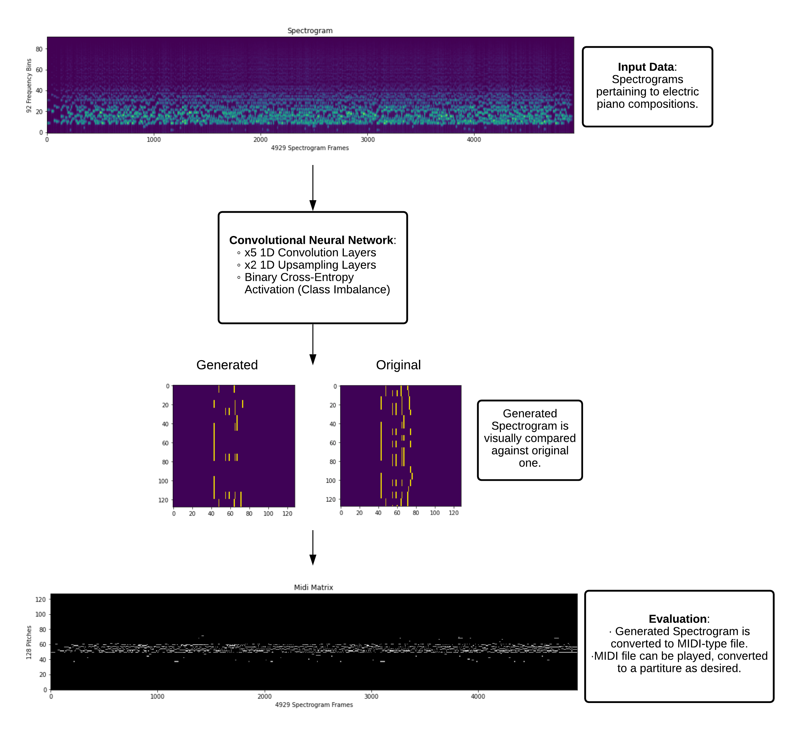
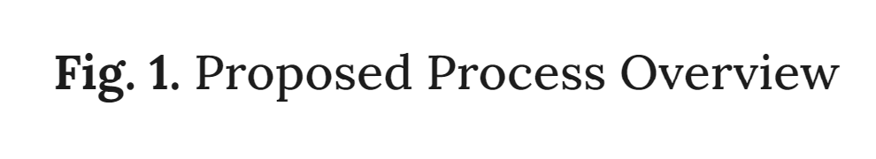
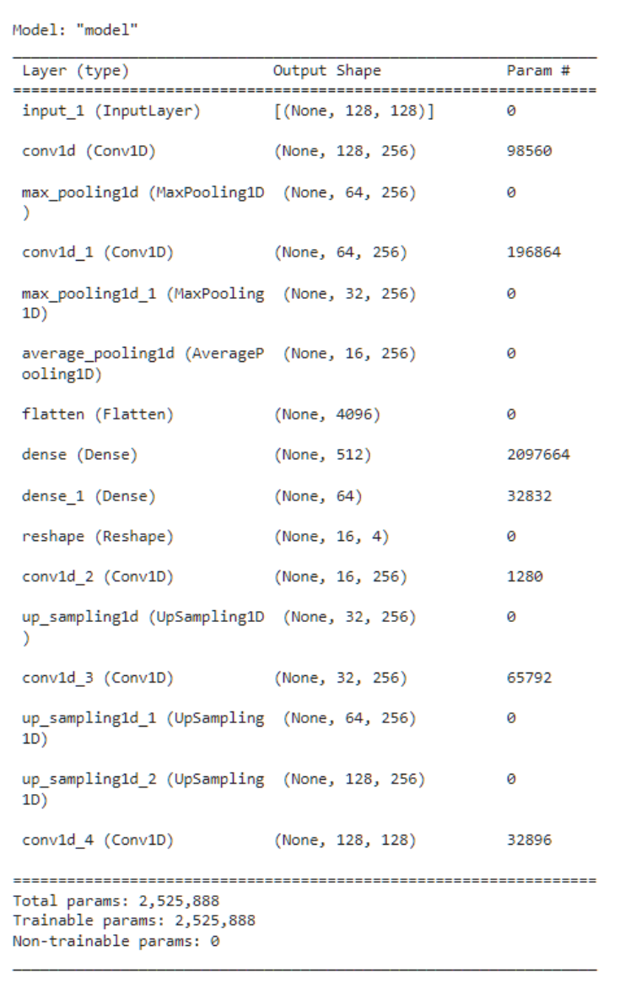
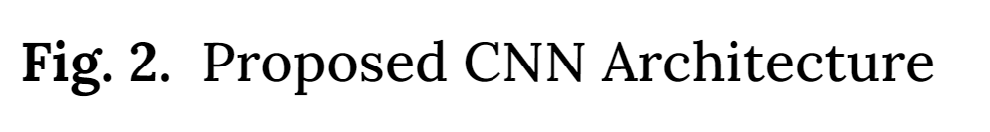
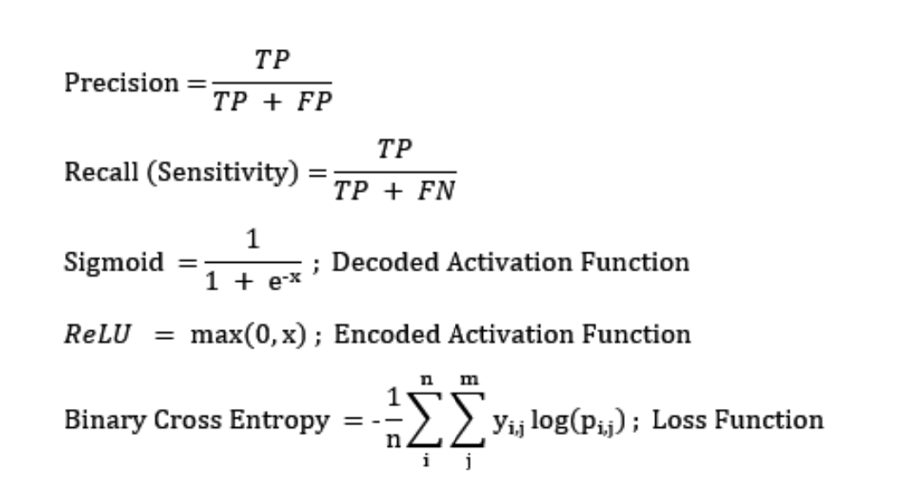
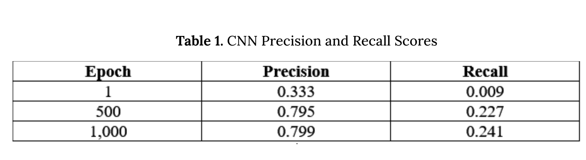
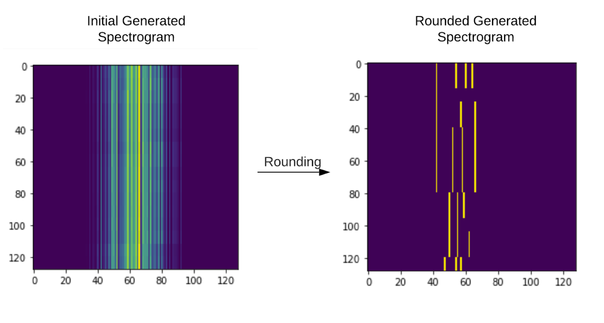
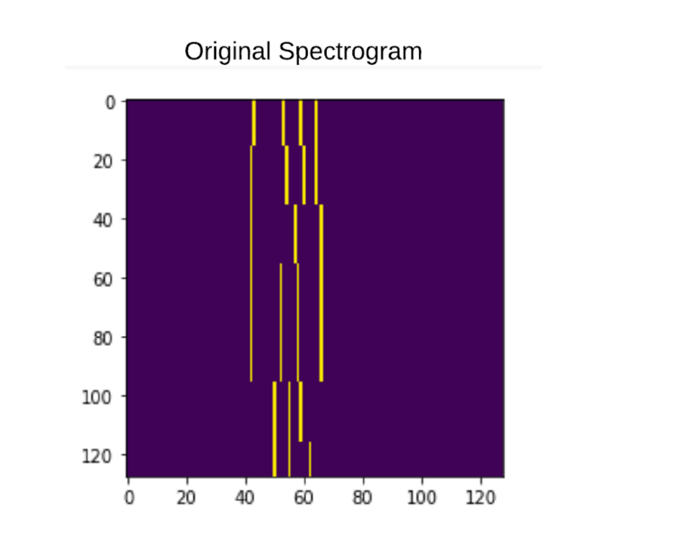
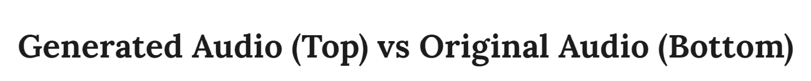

Course Project:
Music Note Identification from Spectrograms
Musicians generally rely on sheet music (partiture) to interpret and play a composition of their choosing. However, in many cases, the musical composition has no readily available partiture, hence, forcing the artist to manually transcribe the song prior to playing it. While transcription "by ear" is commonly used amongst musicians, it is not as accurate as directly extracting the notes from the song's spectrogram. Unfortunately, spectrograms are not easily interpretable to the human eye, as even formally trained musicians may struggle in the transcriptions process.
In this project, we tackle this issue by proposing the use of a Convolutional Neural Network (CNN) as both a spectrogram generator, and, consequently, musical note identifier/predictor. The classifier's performance was evaluated by visually comparing the generated spectrograms against those provided in the dataset used for training and by listening to the generated and original pieces. By training and testing our proposed model on a sample of electric piano spectrograms, we demonstrate that CNN's are capable of automating the process of music transcription, given the song's corresponding spectrogram.

1. Introduction
Music transcription is usually a laborious process, regardless of the employed technique. When transcribing "by ear", the artist is forced to loop through the composition numerous times as they work their way through the partiture, additionally, due to the technique's highly subjective nature, loss of accuracy is inevitable, as there is no established methodology for the process. As a result, despite the auditory nature of sound or music data, analyses with data of this nature are best done using spectrograms, i.e., graphical representations of different frequencies along with a time component, in addition to its amplitude [4]. Unfortunately, most musicians are taught how to read sheet music, but not spectrograms, as these may not be as easily interpretable to the human eye. Therefore, despite the accessibility and plethora of spectrogram data available for use online, this source of image information may not be helpful to formally trained musicians or those learning to read sheet music.
The goal of this project was to develop a machine learning algorithm that could accurately determine a composition's sequence of notes, given excerpt's corresponding spectrogram. Such a classifier would allow for musicians to rapidly convert spectrograms to sheet music, serving as an invaluable training tool for amateur musicians without access to their desired sheet music, and for established artists seeking to quickly convert their spectrograms to partiture. With respect to this, much of the prior research using spectrogram data focuses more on the reverse problem, that is turning sheet music into a spectrogram, for a more technology based application of the audio data [3] [5] [6]. While these applications utilize both spectrograms and music notes, our proposed project's problem is focused more on dealing with audio data in a programing space, as we are trying to go from audio to partiture using spectrograms as our starting point.
In order to achieve this, we utilized Convolutional Neural Networks, an established deep-learning approach within the image classification and generation community. The success of CNNs in this area lies in their ability to separately convolve the input features and perform relevant feature extraction via pooling, eliminating the need for strict data preprocessing and extensive training times.
2. Approach
2.1 Dataset
Our proposed approach utilized the Multimodal Sheet Music Dataset (MSMD) as both a starting point and source of data. The MSMD is a synthetic dataset comprised of 497 classical music pieces that contains both audio and score representations of the pieces aligned at a fine-grained level (344,742 pairs of noteheads aligned to their audio/MIDI counterpart) [5] [6].
2.2 Preprocessing
First, we import the MSMD python library, as it allows us to properly manipulate the dataset and quickly load-in the desired data. However, once loaded, we realized that the amount of information available in the dataset far exceeded our available computational power. As a result, we decided to limit the scope of the project to electric piano compositions. To filter through available musical data, we utilized the glob library to cycle through the dataset's folders and only add folders ending in _electricpiano.flac_spec.npy to our initial dataset. We then proceeded to extract the spectrograms and MIDI files (notes) from the selected electric piano folders, thus creating our training dataset. As a final step prior to model creation and training, we utilized a batching function (data generator) that further streamlines the training time by opening images only when required, rather than opening all images simultaneously (which would most likely overload available memory space).
2.3 Model Training
As stated previously, we utilized a CNN to generate the predicted spectrograms, which are then compared against the original ones to assess model performance. The proposed CNN structure is the following:

Similar to prior models, we followed the standard five 1D convolution layer setup, where we use 1D convolutions instead of 2D because of the spectrograms' similarity to a time series, which are best represented by the former (1D). We also incorporate two separate up sampling layers, so that our output dimensions match those of the input image. As for our activation function, initially, we utilized a sigmoid function, however, upon further inspection of the training data, we noticed that we were dealing with an unbalanced dataset. In such a scenario, a binary cross-entropy activation function will generally outperform a sigmoid, so we opted for the use of a cross-entropy function rather than sigmoid. As for the optimizer, we selected RMSprop as we found it worked best over other available optimizers (Adam, adabelief).
The model was trained over 1,000 epochs, while monitoring precision and recall as performance indicators. Regarding tuning, the number of tunable hyperparameters within a CNN exceed those that could be handled using a gridsearch approach, thus, we relied on the default values suggested by our referenced works and on trial and error experimentation with the number of filters present in each convolution.
2.4 Model Testing
While detailed in the section below, our model testing approach consisted of three main parts:
1. Final (1000th epoch) classifier precision & recall scores, as reported by the keras training process.
2. Visual inspection of the generated vs original spectrograms to ensure the model is working properly.
3. MIDI file comparison. MIDI files are treated as our "ground truth" as they contain the actual audibly reproducible content. Hence, once we convert our generated spectrogram to MIDI-type format, we can compare both the original and predicted compositions by listening to both files.
2.5 Formulas

3. Experiments & Results
Our model was trained and evaluated using the electric piano subset we extracted from the MSMD dataset. The subset consists of 1747 electric piano samples, from which we used all (100%) for training. We used the entire dataset because of the non-traditional approach we selected for model assessment. Rather than directly testing the model' performance using unseen data (holdout set), we relied on auditory and visual feedback to evaluate how well or poorly our model did. The reasoning behind this approach is that due to music's auditory nature, the most efficient way to determine how well the model is performing is to listen to the generated spectrogram's MIDI file.
Strictly quantitative interpretations of model behavior may not accurately reflect how well it is performing, as music's complex nature allows for distinct interpretations of the given piece. Moreover, since the model uses the binary cross entropy as its activation function, every note in the audio file is trying to be predicted. As the midi file size is 128 x 128, there are 16,384 predictions that the model is making for every image. Two-note, three-note, and four-note sequences are all trying to be predicted. Hence, while final accuracy/precision/recall scores may be low, once reproduced as a MIDI-type file, the spectrogram could still sound almost identical to the original piece.
Beside auditory inspection, we also employed visual inspection of the generated spectrogram against its original counterpart and monitored the model's precision and recall scores throughout the training period. Since we used only electric piano samples, both generated and original spectrogram complexity was significantly reduced, which allowed us to use visual inspection as an additional measure of model performance. Regarding the training period, precision and recall scores at epochs [1, 500, 1000] were the following:

Final precision and recall scores were as expected. Due to the sheer volume of information contained within a spectrogram, recall scores are generally low when dealing with auditory-type data, as even slight mistakes in note-sequence predictions will cause the sequence to be "incorrect", severely affecting recall scores. On the other hand, precision scores are relatively high, indicating that the model was generally successful at identifying the target notes. This can be further evidenced upon visual inspection of the generated spectrogram against the original:


Notice that while the initial generated spectrogram seems quite different to the original, once its values are rounded, it looks almost identical. This is because rounding "separates" the segments the generated spectrogram's predicted notes, allowing for easy visual inspection against the original one. Similar to training precision and recall values, visual inspection of the spectrograms also suggests satisfactory model performance, as the generated and original spectrograms are extremely similar. Finally we evaluate the MIDI-type file of our generated spectrogram:

Auditory assessment further corroborates that the model's performance is satisfactory. While the audios certainly have different pitch and tone, this can be explained by the difference in instruments used in each. Our generated audio consists of music made by an electric piano, while the original piece was most likely played on a grand piano. However, it is easily noticeable that the audio files are playing the exact same song, as both the notes and tempo played are nearly identical.
4. Conclusions
In this project, we successfully created a Convolutional Neural Network trained to detect the note sequences in an audio piece of music. This model can be used by musicians as an aid in transcribing musical notation from an audio clip. Traditionally, this would need to be done by ear and via multiple manual iterations through the music by a human. With the help of our model, musicians can now create a readable sheet music in a much faster and easier way.
Given more time and resources, the future of this project would be to expand testing to determine how well our model works on a variety of genres and styles of music, while incorporating additional training as necessary to further encapsulate the meters and rhythms able to be accurately perceived by the model.
Though training was limited to only the subset of electric piano pieces in the MSMD dataset due to time and resource limitations, this project could be expanded further to include other instrumentations. As opposed to experimenting with my styles and meters, a more complicated problem for which this project is a jumping off point is detecting multiple instrumental parts within one audio clip (i.e. transcription of 2 or more instrumental parts from an audio clip that has both parts playing simultaneously).
References
[1] Bhalke, D. G., Rao, C. R., Bormane, D. S., & Vibhute, M. "Spectogram based musical instrument identification using hidden markov model (HMM) for monophonic and polyphonic music signals,"
Acta Technica Napocensis,
52(2), 1, 2011.
[2] Costa, Y. M., Oliveira, L. S., & Silla Jr, C. N. "An evaluation of convolutional neural networks for music classification using spectrograms,"
Applied soft computing,
52, 28-38, 2017.
https://doi.org/10.1016/j.asoc.2016.12.024 [3] Dorfer, M., Arzt, A., & Widmer, G. "Towards score following in sheet music images,"
arXiv preprint arXiv:1612.05050, 2016.
https://arxiv.org/abs/1612.05050
[4] Doshi, S. "Music feature extraction in python,"
Towards data science, 30 December 2018.
https://towardsdatascience.com/extract-features-of-music-75a3f9bc265d
[5] Dorfer, M., Hajič Jr, J., Arzt, A., Frostel, H., & Widmer, G. "A multimodal audio sheet music dataset,"
GitHub repository, November 2018.
https://github.com/CPJKU/msmd
[6] Dorfer, M., Hajič Jr, J., Arzt, A., Frostel, H., & Widmer, G. "Learning audio–sheet music correspondences for cross-modal retrieval and piece identification,"
Transactions of the International Society for Music Information Retrieval,
1(1), 2018.
http://doi.org/10.5334/tismir.12
[7] Guven, E., & Ozbayoglu, A. M. "Note and timbre classification by local features of spectrogram,"
Procedia Computer Science,
12, 182-187, 2012.
https://doi.org/10.1016/j.procs.2012.09.051
[8] Saha, S. "A comprehensive guide to convolutional neural networks-the ELI5 way,"
Towards Data Science 15 December 2018.
https://towardsdatascience.com/a-comprehensive-guide-to-convolutional-neural-networks-the-eli5-way-3bd2b1164a53
This is some text inside of a div block.